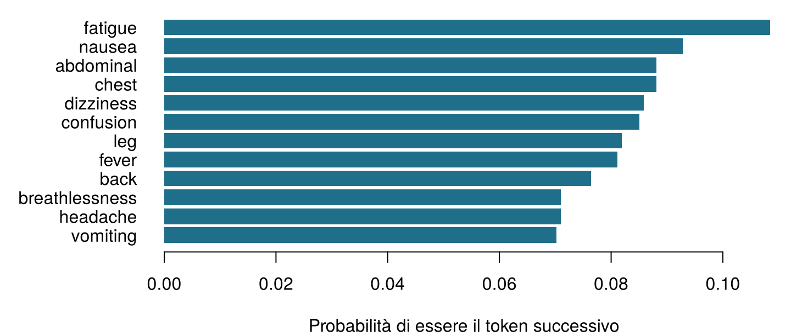
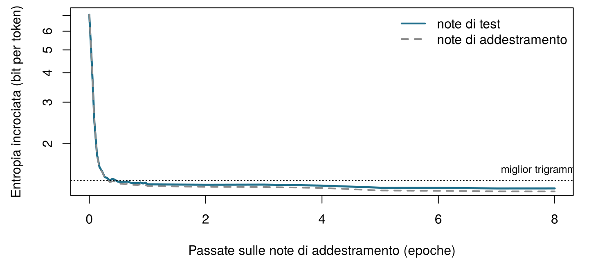

| note_id | set | text |
|---|---|---|
| N0001 | train | aki confirmed . |
| N0002 | train | patient reports vomiting . patient denies leg pain since yesterday . |
| N0004 | train | patient denies nausea since last night . |
| N0009 | train | patient reports breathlessness since this morning . patient reports headache since last night . |
| N0011 | train | started gentamicin today , patient complains of nausea , check gentamicin level tomorrow . |
| N0012 | train | lipase rising , pancreas function worsening . |
16 Prevedere la parola successiva: modelli linguistici ed embedding
Prima di qualsiasi formula, conta. Ecco sei brevi note del Reparto 7 (in inglese: patient = paziente, reports = riferisce, denies = nega, pain = dolore, nausea = nausea, fever = febbre, since yesterday = da ieri, no evidence of = nessun segno di).
patient reports pain . · patient reports nausea . · patient denies pain . · patient reports pain since yesterday . · patient reports fever . · no evidence of pain .
| Domanda | La tua risposta |
|---|---|
| Quante volte compare la parola reports? | |
| In quante di queste volte è seguita da pain? | |
| Quindi, in base a queste note, qual è la probabilità che la parola dopo reports sia pain? (un numero tra 0 e 1) | |
| Un sistema che scrive sempre la parola successiva più frequente digita patient. Che cosa scrive subito dopo? |
Come usare questo capitolo
Inizi da qui?
Questo capitolo prende in prestito alcune idee dai capitoli precedenti.
- Token e vocabolario (Capitolo 15). Un testo viene tagliato in token (parole, pezzi di parole o caratteri, a seconda del tokenizzatore); l’insieme dei token distinti è il vocabolario \(\mathcal{V}\), di dimensione \(|\mathcal{V}|\), e il token in posizione \(t\) si scrive \(w_t\). Qui le note sono già parole minuscole e segni di punteggiatura separati da spazi, quindi un token è semplicemente una parola o un segno di punteggiatura.
- Probabilità, probabilità condizionata e massima verosimiglianza (Capitolo 2). \(P(A \mid B)\) è la probabilità di \(A\) quando \(B\) è noto; la stima di massima verosimiglianza di una proporzione è il numero di successi diviso per il numero di prove, \(k/n\).
- Entropia (Capitolo 2): la sorpresa media di un esito, \(-\log_2 P\), misurata in bit. Il Capitolo 2 aveva promesso che sarebbe tornata come la funzione di perdita che addestra i modelli linguistici; succede nella Sezione 16.5.
- Softmax e discesa del gradiente (Capitolo 7): la softmax trasforma una lista di punteggi in probabilità che sommano a uno; la discesa del gradiente regola i pesi di una rete per ridurre una perdita.
- Similarità del coseno (Capitolo 10, Capitolo 15): il coseno dell’angolo tra due vettori, 1 quando puntano nella stessa direzione e 0 quando sono perpendicolari.
- Dati di addestramento e di test (Sezione 1.8): un modello si giudica su dati che non ha visto mentre veniva costruito.
| Esempio | Chi o che cosa | Esito | Volti che incontrerai |
|---|---|---|---|
| 1 Terapia intensiva del Reparto 7 | 1.250 pazienti di terapia intensiva in 4 ospedali | variazione della creatinina in 48 h (danno renale acuto se ≥ 0,3 mg/dL) | Aoife (71 anni, sepsi, rischio borderline), Tomás (54 anni, rischio basso), Priya (38 anni, rischio alto); la dott.ssa Emma Walsh; Seán, il farmacista |
| 2 Studio ONCO-1 | 1.000 pazienti randomizzati a ricevere o meno la chemioterapia | riduzione del tumore (%) | i pazienti #0042 e #0917 |
| 3 HomeBeat | 500 persone che indossano uno smartwatch a casa | punteggio di stress, evento di peggioramento | Lena |
| 4 CellWorks | 420 lotti di produzione di una terapia cellulare | punteggio di potenza | il lotto CW-118 |
Tutti e quattro i dataset sono simulati e si possono scaricare dall’appendice sui dati. La presentazione completa si trova in Sezione 1.1.
Questo capitolo spiega come una macchina scrive un testo, un token alla volta. Comprende dieci sezioni e un Laboratorio, otto verifiche rapide, quattro widget “Prova tu”, una sfida e tre missioni di programmazione in R e Python. Calcola circa 100 minuti. I modelli sono abbastanza piccoli da poter essere capiti fino in fondo e, tranne due addestrati in anticipo, da girare nel tuo browser.
La notazione in sintesi (solo per consultazione)
| Simbolo | Significato | Sezione |
|---|---|---|
| \(\mathcal{V}\), \(\lvert\mathcal{V}\rvert\) | vocabolario e sua dimensione | Sezione 16.2 |
| \(w_t\), \(w_{1:N}\) | token in posizione \(t\); una sequenza di \(N\) token | Sezione 16.2 |
| \(w_{<t}\) | tutti i token prima della posizione \(t\) (il contesto) | Sezione 16.2 |
| \(P_\theta(w_t \mid w_{<t})\) | probabilità del token successivo data da un modello con parametri \(\theta\) | Sezione 16.2 |
| \(c(\cdot)\) | numero di volte in cui un token o una sequenza compare nelle note di addestramento | Sezione 16.4 |
| \(\delta\) | pseudoconteggio aggiunto nello smoothing add-\(\delta\) | Sezione 16.4 |
| \(H(P)\), \(H(P, Q)\) | entropia ed entropia incrociata, in bit | Sezione 16.5 |
| \(D_{\text{KL}}(P \,\Vert\, Q)\) | divergenza di Kullback–Leibler | Sezione 16.5 |
| PPL | perplessità | Sezione 16.5 |
| \(\mathbf{z}\), \(z_j\) | logit (punteggi prima della softmax) | Sezione 16.6 |
| \(\tau\) | temperatura di campionamento | Sezione 16.6 |
| \(\mathbf{e}_w\), \(\mathbf{E}\), \(d\) | embedding del token \(w\); matrice degli embedding; dimensione dell’embedding | Sezione 16.7 |
| \(\mathbf{h}_t\) | stato nascosto dopo la lettura del token \(t\) | Sezione 16.9 |
L’elenco completo si trova nella pagina della notazione.
16.1 I dati: ottomila note brevi
I modelli linguistici imparano dai testi, quindi ci serve un corpus. Le note cliniche reali sono informazioni sanitarie protette e non possono essere distribuite con un libro, perciò questo capitolo usa 8 000 note simulate del Reparto 7, generate da una piccola grammatica con un seme casuale fisso (sim_ch16_ward7_notes.py). Non descrivono nessuna persona reale e, come nell’ospedale del Reparto 7, sono scritte in inglese. Ogni nota contiene una o due brevi proposizioni — un sintomo, un farmaco iniziato, un andamento di laboratorio, una negazione, un piano, un’osservazione di un membro dello staff — e 7 147 di esse formano l’insieme di addestramento, le restanti 853 l’insieme di test.
Le note di addestramento contengono 65 431 token tratti da un vocabolario di appena 129 parole e segni di punteggiatura distinti. È pochissimo rispetto alle centinaia di miliardi di token usati per addestrare i modelli linguistici moderni (Brown et al. 2020), e le note sono molto più ripetitive della scrittura clinica reale. È voluto: poiché la grammatica che ha generato le note è nota, possiamo verificare che cosa ha imparato ciascun modello, come abbiamo fatto con i dataset simulati dei capitoli precedenti. La grammatica nasconde anche tre trappole che faremo scattare più avanti: farmaci della stessa classe compaiono in frasi simili; alcune note nominano un farmaco e chiedono, una o due proposizioni più tardi, di controllare il livello di quello stesso farmaco; e il pronome che segue ogni ruolo dello staff è deliberatamente sbilanciato, come accade in molti testi reali.
16.2 Un modello linguistico assegna probabilità al token successivo
Il completamento automatico sullo schermo di Seán fa una cosa sola: dato il testo fin lì, assegna a ogni token del suo vocabolario una probabilità di venire dopo e mostra quello più probabile. Dopo “patient reports” (“il paziente riferisce”) le note del Reparto 7 proseguono con un sintomo o una sede corporea. Contare ciò che segue queste due parole nelle note di addestramento dà le probabilità della Figura 16.1.

Definizione 16.1 (Modello linguistico) Un modello linguistico (language model) è una distribuzione di probabilità sulle sequenze di token. In pratica è specificato dalle sue probabilità del token successivo \(P_\theta(w_t \mid w_{<t})\): per ogni posizione \(t\) e ogni contesto possibile \(w_{<t} = (w_1, \dots, w_{t-1})\), una probabilità per ciascun token del vocabolario, che sommano a uno. I parametri \(\theta\) sono stimati da un corpus di addestramento (Jurafsky e Martin 2026, cap. 3).
Da questa definizione discendono due operazioni. Valutare: il modello sa dire quanto è probabile un intero testo, il che ci permette di confrontare modelli e di individuare testi insoliti. Generare: il modello sa scrivere, scegliendo un token successivo dalla propria distribuzione, aggiungendolo al testo e ripetendo. Un chatbot che risponde a una domanda fa esattamente questo, token dopo token; il resto della Parte V spiega quanta macchina possa stare dentro \(P_\theta\), ma il ciclo esterno non cambia mai.
L’idea è più antica dei computer. Nel 1913 Andrej Markov contò a mano quanto spesso una vocale segue una vocale o una consonante in 20 000 lettere dell’Evgenij Onegin di Puškin, per mostrare che le lettere di un testo non sono estrazioni indipendenti (Markov 2006). Nel 1951 Claude Shannon chiese ad alcune persone di indovinare la lettera successiva di un testo inglese e usò la loro percentuale di successo per stimare quanto sia prevedibile l’inglese (Shannon 1951). Un modello linguistico gioca al gioco degli indovinelli di Shannon.
Il completamento automatico suggerisce gentamicin. Che cosa ha calcolato, esattamente, il modello?
16.3 La regola della catena: la probabilità di un’intera nota
Una nota è una sequenza di token \(w_1, w_2, \dots, w_N\). La sua probabilità si può sempre scrivere come prodotto di probabilità del token successivo. Con due token, la definizione di probabilità condizionata del Capitolo 2 dà \(P(w_1, w_2) = P(w_1)\,P(w_2 \mid w_1)\); applicarla più volte dà la regola generale.
Definizione 16.2 (Regola della catena della probabilità) Per qualsiasi sequenza di token, \[ P(w_1, w_2, \dots, w_N) = P(w_1)\, P(w_2 \mid w_1)\, P(w_3 \mid w_1, w_2) \cdots P(w_N \mid w_1, \dots, w_{N-1}) = \prod_{t=1}^{N} P(w_t \mid w_{<t}) . \qquad(16.1)\] La regola è esatta: non comporta alcuna ipotesi. Trasforma il compito impossibile di assegnare una probabilità a ogni testo possibile in una sequenza di previsioni del token successivo (Jurafsky e Martin 2026, cap. 3).
Per segnare dove una nota comincia e finisce aggiungiamo due token speciali, <s> (inizio) e </s> (fine): la prima previsione è \(P(w_1 \mid \texttt{<s>})\), e il modello deve prevedere anche </s>, così da imparare quando una nota è finita. La Tabella 16.2 applica la Equazione 16.1 alla nota “patient reports chest pain .” (“il paziente riferisce dolore toracico .”), stimando ogni fattore con il conteggio, nelle note di addestramento, di quante volte la parola segue quella precedente (il metodo della prossima sezione).
| Passo | Token precedente | Token successivo | Probabilità | Sorpresa (bit) |
|---|---|---|---|---|
| 1 | <s> |
patient |
0.207 | 2.28 |
| 2 | patient |
reports |
0.493 | 1.02 |
| 3 | reports |
chest |
0.088 | 3.50 |
| 4 | chest |
pain |
1.000 | 0.00 |
| 5 | pain |
. |
0.595 | 0.75 |
| 6 | . |
</s> |
0.729 | 0.46 |
Moltiplicando i sei fattori si ottiene \(P(\text{nota}) \approx\) 0,0039. Sembra minuscola, ma è la probabilità di questa sequenza esatta tra tutte le note che il modello potrebbe scrivere. I testi lunghi hanno probabilità astronomicamente piccole, così piccole che i computer le arrotondano a zero. Il rimedio è sommare i logaritmi invece di moltiplicare le probabilità: la log-probabilità della nota è la somma delle log-probabilità dei singoli token, e l’opposto di questa somma, in base 2, è la sorpresa totale, qui 8,01 bit. Ogni modello linguistico, da questa tabella al chatbot più grande, viene addestrato e valutato su somme come questa.
Una delle sei probabilità della Tabella 16.2 viene sostituita da 0, perché un modello non ha mai visto quella coppia di parole. Che cosa succede alla probabilità dell’intera nota e alla sua sorpresa totale?
16.4 Modelli a n-grammi: prevedere contando
La regola della catena chiede \(P(w_t \mid w_{<t})\) dato l’intero contesto, ma la maggior parte dei contesti lunghi compare una volta sola, o mai, in qualsiasi corpus. La soluzione più antica è dimenticare tutto tranne gli ultimi pochi token.
Definizione 16.3 (Modello a n-grammi) Un modello a n-grammi assume che il token successivo dipenda solo dagli \(n-1\) token precedenti (un’ipotesi di Markov): \[ P(w_t \mid w_{<t}) \approx P(w_t \mid w_{t-n+1}, \dots, w_{t-1}) . \] Un modello a bigrammi (\(n = 2\)) guarda un token precedente; un modello a trigrammi (\(n = 3\)) ne guarda due. Le probabilità si stimano contando, il che corrisponde alla stima di massima verosimiglianza: \[ \hat P(w_t \mid w_{t-1}) = \frac{c(w_{t-1}\, w_t)}{c(w_{t-1})} , \qquad(16.2)\] dove \(c(\cdot)\) conta le occorrenze nel corpus di addestramento (Jurafsky e Martin 2026, cap. 3).
(La lettera \(n\) qui è l’ordine del modello, un nome ormai consolidato; non ha niente a che vedere con il numero di istanze \(n\) dei capitoli precedenti.) La Equazione 16.2 è il \(k/n\) del Capitolo 2 in abiti nuovi: tra le \(c(w_{t-1})\) volte in cui il token precedente è comparso, la proporzione seguita da \(w_t\). Nelle note di addestramento reports compare 1 282 volte ed è seguito da chest (torace) nel 8,8 % dei casi, quindi \(\hat P(\text{chest} \mid \text{reports}) =\) 0,088. Hai fatto lo stesso calcolo con sei note all’ingresso di questo capitolo.
Uno scrittore a bigrammi. Il widget conta ogni coppia di token consecutivi nelle 7 147 note di addestramento, poi scrive note nuove estraendo ripetutamente il token successivo in proporzione a quante volte ha seguito quello corrente. Ogni riga della tabella è un fattore della regola della catena. Scegli una parola qui sotto per vedere la distribuzione da cui estrae, e sposta il cursore dello smoothing (spiegato dopo il widget) per vedere che cosa succede alle parole che non l’hanno mai seguita. Genera tre note.
Lo scrittore a bigrammi produce note sensate a livello locale che ogni tanto divagano: poiché ricorda un solo token, può cominciare con un farmaco e finire con un sintomo, o ripetere una proposizione. L’altro suo punto debole è nella tabella: una coppia mai vista riceve probabilità zero e, come ha mostrato la verifica rapida, un solo zero rende impossibile un’intera nota.
16.4.1 Quanto sono sparsi i conteggi?
I contesti più lunghi rendono le previsioni più nitide ma i conteggi più radi. Con 130 token possibili in ogni posizione del contesto (le parole più <s>), ci sono 130 contesti possibili di un token, 16 900 contesti di due token, e così via. La Tabella 16.3 mostra quanto pochi di essi compaiano davvero nelle note di addestramento.
| Modello | Lunghezza del contesto | Contesti visti | Contesti possibili | Quota vista |
|---|---|---|---|---|
| bigramma | 1 | 130 | 130 | 1 |
| trigramma | 2 | 398 | 16 900 | 0.024 |
| 4-gramma | 3 | 1 429 | 2 197 000 | 0.00065 |
| 5-gramma | 4 | 3 338 | 285 610 000 | 1.2e-05 |
| 6-gramma | 5 | 6 033 | 37 129 300 000 | 1.6e-07 |
Anche in questo corpus piccolo e ripetitivo un modello a 4-grammi ha visto solo una frazione minuscola dei contesti che potrebbe incontrare. Con un vocabolario reale di decine di migliaia di token il problema diventa schiacciante: la maggior parte delle frasi perfettamente normali contiene sequenze di parole che nessun corpus ha mai registrato.
16.4.2 Smoothing: mai dire mai
Guarda la parola meropenem. Nelle note del Reparto 7 è sempre l’antibiotico a cui si passa, mai uno che viene iniziato (started), quindi \(\hat P(\text{meropenem} \mid \text{started}) =\) 0. Una nota che dicesse “started meropenem for sepsis” (“iniziato meropenem per sepsi”) verrebbe dichiarata impossibile, anche se qualsiasi farmacista sa che è del tutto normale. Lo smoothing sposta un po’ di probabilità da ciò che è stato visto a ciò che non lo è stato.
Definizione 16.4 (Smoothing) Lo smoothing (letteralmente “lisciamento”) corregge le probabilità basate sui conteggi in modo che nessun token possibile abbia probabilità zero. La versione più semplice, lo smoothing add-\(\delta\), aggiunge uno pseudoconteggio \(\delta > 0\) a ogni conteggio: \[ \hat P_\delta(w_t \mid w_{t-1}) = \frac{c(w_{t-1}\, w_t) + \delta}{c(w_{t-1}) + \delta\, |\mathcal{V}|} , \qquad(16.3)\] dove \(|\mathcal{V}|\) è il numero di token che possono seguire. Con \(\delta = 1\) si chiama smoothing di Laplace o add-one (“aggiungi uno”) (Jurafsky e Martin 2026, cap. 3).
started compare 1 463 volte nelle note di addestramento e ci sono 130 possibili token successivi (le 129 parole e segni di punteggiatura, più </s>), quindi con lo smoothing add-one \(\hat P_1(\text{meropenem} \mid \text{started}) = 1 / (1463 + 130) \approx\) 0,00063: piccola, ma non più zero. La stessa quantità va a “started started” e a “started ,”, che di normale non hanno nulla: lo smoothing non sa distinguere le lacune plausibili da quelle assurde, e nelle prossime sezioni ci riusciranno gli embedding. \(\delta\) è un iperparametro, da scegliere su dati di validazione (Capitolo 3); puoi osservarne l’effetto nel widget qui sopra. Esistono schemi migliori, come il backoff (ripiego) su contesti più brevi e lo smoothing di Kneser–Ney, che sono stati lo stato dell’arte per decenni (Katz 1987; Kneser e Ney 1995; Chen e Goodman 1999).
Un modello a trigrammi addestrato sulle note del Reparto 7 viene usato sulle lettere di dimissione del reparto di cardiologia. Quale affermazione è la più accurata?
Conta il tuo bigramma. Le note di addestramento sono già caricate e tagliate in una tabella di coppie di token consecutivi, bigrams, con le colonne prev (precedente) e nxt (successivo) (<s> e </s> segnano l’inizio e la fine di ogni nota). Usando la Equazione 16.2, stima la probabilità che il token dopo denies (nega) sia fever (febbre). Completa lo spazio vuoto.
Lo spazio vuoto è la parola di cui vuoi la probabilità, scritta come stringa tra virgolette.
mean(after == "fever")Lo spazio vuoto è la parola di cui vuoi la probabilità, scritta come stringa tra virgolette.
(after == "fever").mean()16.5 Entropia incrociata e perplessità: quanto è sorpreso il modello?
Ora abbiamo diversi modelli linguistici — a bigrammi o a trigrammi, con più o meno smoothing — e ci serve un modo per confrontarli. Come sempre, il confronto si fa su testi che i modelli non hanno visto: le 853 note di test. Un buon modello è uno che non si sorprende davanti a esse, cioè che ha dato una probabilità alta ai token che sono venuti davvero. Il Capitolo 2 misurava la sorpresa in bit; ecco la versione generale.
Definizione 16.5 (Entropia incrociata) Se gli esiti seguono una distribuzione \(P\) ma li prevediamo con un modello \(Q\), l’entropia incrociata (cross-entropy) è la sorpresa media che sperimentiamo: \[ H(P, Q) = -\sum_{w} P(w) \log_2 Q(w) . \] Non è mai minore dell’entropia \(H(P) = -\sum_w P(w) \log_2 P(w)\), e la differenza è la divergenza di Kullback–Leibler, \(D_{\text{KL}}(P \,\Vert\, Q) = H(P, Q) - H(P) \ge 0\), che è zero solo quando \(Q = P\) (Cover e Thomas 2006; Kullback e Leibler 1951). Per un modello linguistico applicato a un testo di test di \(N\) token non conosciamo \(P\), ma il testo ne è un campione, quindi l’entropia incrociata si stima con la sorpresa media per token: \[ \hat H = -\frac{1}{N} \sum_{t=1}^{N} \log_2 P_\theta(w_t \mid w_{<t}) . \qquad(16.4)\]
Un piccolo esempio rende concreta l’identità. Se la vera distribuzione del token successivo su tre parole è \(P = (0{,}7;\ 0{,}2;\ 0{,}1)\) e un modello prevede \(Q = (0{,}6;\ 0{,}3;\ 0{,}1)\), allora \(H(P) =\) 1,157 bit, \(H(P, Q) =\) 1,195 bit e la divergenza KL è la differenza, 0,039 bit: la sorpresa in più causata dall’uso di un modello leggermente sbagliato. Poiché \(H(P)\) non dipende dal modello, minimizzare l’entropia incrociata equivale a minimizzare la divergenza KL dalla verità, ed equivale anche a massimizzare la verosimiglianza del testo di addestramento (la sorpresa media è l’opposto della log-verosimiglianza diviso per \(N\)). Questa è la perdita che addestra tutti i modelli linguistici di questo capitolo e dei due successivi, proprio come addestrava i classificatori del Capitolo 5, dove il “vocabolario” aveva solo due voci, AKI o no.
Definizione 16.6 (Perplessità) La perplessità (perplexity) di un modello su un testo di test è due elevato alla sua entropia incrociata in bit: \[ \text{PPL} = 2^{\hat H} = \left( \prod_{t=1}^{N} P_\theta(w_t \mid w_{<t}) \right)^{-1/N} . \] Si può leggere come il numero effettivo di scelte equiprobabili tra cui il modello esita a ogni passo: un modello che distribuisse la propria probabilità in modo uniforme su 8 token avrebbe perplessità 8. Più bassa è, meglio è (Jurafsky e Martin 2026, cap. 3).
(Con i logaritmi naturali, come nella maggior parte dei software, la stessa quantità è \(e^{\hat H}\); il numero non cambia. Il parametro “perplessità” di t-SNE nel Capitolo 10 è la stessa idea applicata a una distribuzione sui vicini (Maaten e Hinton 2008).) La Tabella 16.4 confronta i modelli sulle 8 639 previsioni necessarie per le note di test.
| Modello | Entropia incrociata (bit per token) | Perplessità |
|---|---|---|
| Unigramma (nessun contesto), add-0,01 | 5.887 | 59.20 |
| Bigramma, add-one (Laplace) | 1.956 | 3.88 |
| Bigramma, add-0,01 | 1.700 | 3.25 |
| Trigramma, add-one (Laplace) | 1.961 | 3.89 |
| Trigramma, add-0,01 | 1.394 | 2.63 |
| Neurale, finestra di 3 token | 1.292 | 2.45 |
| LSTM (nota intera) | 1.217 | 2.32 |
Leggila dall’alto verso il basso. Un modello senza alcun contesto (unigramma) esita tra circa 59 token a ogni passo. Usare un token precedente riduce questo numero a 3,2, usarne due a 2,6. Anche lo smoothing conta, e non in modo ovvio: con lo smoothing add-one il modello a trigrammi non è migliore di quello a bigrammi (3,89 contro 3,88), perché aggiungere 1 a ciascuno dei 130 conteggi possibili sommerge le poche osservazioni disponibili per ogni contesto di due token. Un \(\delta\) piccolo funziona molto meglio qui. (Abbiamo scelto \(\delta\) da una breve lista guardando le note di test, il che, come avvertiva il Capitolo 3, rende questi numeri di test un po’ ottimistici; un insieme di validazione sarebbe la strada onesta.) Nota anche quanto sono bassi tutti i numeri: l’inglese reale ha perplessità nell’ordine delle decine o delle centinaia con buoni modelli (Jurafsky e Martin 2026, cap. 3; Radford et al. 2019), ma le note del Reparto 7 vengono da una piccola grammatica e sono molto prevedibili. La perplessità misura un modello su un testo particolare: i numeri ottenuti su corpora diversi o con tokenizzatori diversi non si possono confrontare.
Il modello A ha una perplessità di 3,2 sulle note di test del Reparto 7; il modello B ha una perplessità di 45 su una raccolta di vere lettere di dimissione. Quale modello è migliore?
Perplessità a mano. Un modello a bigrammi con smoothing add-0,01 ha assegnato a ciascuno dei 10 token della nota di test “started gentamicin today , check gentamicin level tomorrow .” (“iniziata gentamicina oggi , controllare livello di gentamicina domani .”; i suoi nove token più </s>) le probabilità contenute nel vettore p. Calcola la perplessità del modello su questa nota: due elevato alla sorpresa media in bit.
Logaritmi in base 2 in R: log2().
2^(-mean(log2(p)))Logaritmi in base 2 in numpy: np.log2().
2 ** (-np.mean(np.log2(p)))16.6 Dalle probabilità al testo: softmax, temperatura e campionamento
I modelli basati sui conteggi producono direttamente delle probabilità. I modelli linguistici neurali, come i classificatori del Capitolo 7, producono invece un punteggio reale per ogni token del vocabolario, i logit \(\mathbf{z} = (z_1, \dots, z_{|\mathcal{V}|})\), e la softmax li trasforma in probabilità: \(P(w_j) = e^{z_j} / \sum_{k} e^{z_k}\). Con tre parole candidate e logit \(\mathbf{z} = (2{,}5;\ 1{,}0;\ 0{,}3)\), le probabilità sono 0,750, 0,167 e 0,083 (Figura 16.2). È il passo che il Capitolo 5 aveva promesso: la softmax è la funzione logistica generalizzata da due esiti a tanti quanti sono i token (Goodfellow, Bengio, e Courville 2016, sez. 6.2.2).
Come deve scegliere, allora, il modello il token successivo? La scelta si chiama decodifica (decoding) e ha un grande effetto sull’aspetto del testo.
Definizione 16.7 (Decodifica: greedy, campionamento, temperatura, top-k, top-p) La decodifica greedy (“avida”) prende sempre il token più probabile: è deterministica e tende a ripetersi. Il campionamento estrae a caso il token successivo in proporzione alla sua probabilità, così lo stesso prompt può dare testi diversi. Due manopole modellano la distribuzione prima del campionamento. La temperatura \(\tau > 0\) divide i logit prima della softmax, \[ P_\tau(w_j) = \frac{e^{z_j / \tau}}{\sum_k e^{z_k / \tau}} , \qquad(16.5)\] in modo che \(\tau < 1\) renda la distribuzione più appuntita (per \(\tau \to 0\) il campionamento diventa greedy) e \(\tau > 1\) la appiattisca (per \(\tau \to \infty\) tutti i token diventano equiprobabili). Il campionamento top-\(k\) tiene solo i \(k\) token più probabili e rinormalizza (Fan, Lewis, e Dauphin 2018); il campionamento top-\(p\) (nucleus) tiene il più piccolo insieme di token più probabili le cui probabilità sommano almeno a \(p\) (Holtzman et al. 2020).
Con i logit di prima, \(\tau = 0{,}5\) dà le probabilità 0,942, 0,047 e 0,012; \(\tau = 2\) dà 0,554, 0,262 e 0,184. L’ordine non cambia mai; cambia solo la decisione con cui il modello vi si impegna.
Gira la manopola della temperatura. Le distribuzioni qui sotto vengono dal piccolo modello linguistico neurale della Sezione 16.8, addestrato sulle note del Reparto 7: per ogni contesto ha prodotto un logit per ciascuno dei 131 token. Scegli un contesto, poi sposta i cursori della temperatura e del top-\(k\) ed estrai dei campioni. Il numero effettivo di scelte è \(2^H\), la perplessità della distribuzione stessa. Compito: dopo “patient reports”, trova un’impostazione in cui il modello sceglie tra meno di due opzioni effettive, e poi una in cui sceglie tra più di venti.
Prova il contesto “the surgeon says” (“il chirurgo dice”). Con \(\tau = 1\) il modello dà a he (lui) una probabilità del 87 % e a she (lei) del 13 %, quasi esattamente le quote presenti nelle note di addestramento, dove il 87 % delle menzioni di surgeon è seguito da he. Abbassa la temperatura e she sparisce del tutto: un completamento automatico greedy scrive sempre he, un’esagerazione di uno squilibrio che era già nei dati. È quello che è successo sullo schermo di Seán.
Ne derivano due lezioni per l’uso clinico. Primo, la generazione comporta il caso: a meno che la decodifica non sia greedy, lo stesso prompt può produrre note diverse, quindi l’output di un sistema in una certa occasione è un campione, non la risposta. Secondo, un campione fluente non è un fatto verificato. Il modello scrive ciò che è probabile dato il suo testo di addestramento, e il probabile e il vero possono separarsi; un testo fluente, sicuro di sé e sbagliato si chiama allucinazione (Ji et al. 2023), e il Capitolo 18 esamina come individuarla e limitarla. Per redigere la documentazione clinica si preferiscono di solito temperature basse, perché la coerenza conta più della varietà.
Un ospedale configura il suo assistente per la stesura delle note con una temperatura vicina a 0. Quale conseguenza deve aspettarsi il responsabile della sicurezza clinica?
16.7 Dai vettori one-hot agli embedding
I modelli basati sui conteggi trattano ogni token come un simbolo slegato dagli altri. Per un modello a bigrammi, vancomycin e gentamicin sono diversi quanto vancomycin e tomorrow (domani); ciò che impara sull’uno non gli dice nulla sull’altro. In forma vettoriale, ogni token è un vettore one-hot: un vettore di lunghezza \(|\mathcal{V}|\) con un 1 nella posizione del token stesso e 0 ovunque altrove. Due vettori one-hot diversi sono sempre perpendicolari, quindi la loro similarità del coseno è esattamente 0: ogni parola è ugualmente dissimile da tutte le altre.
Definizione 16.8 (Embedding) Un embedding (rappresentazione vettoriale densa) rappresenta ogni token \(w\) con un vettore denso \(\mathbf{e}_w\) di \(d\) numeri reali, con \(d\) molto più piccolo di \(|\mathcal{V}|\) (qui \(d =\) 24; nei modelli grandi qualche migliaio). I vettori sono le righe di una matrice degli embedding \(\mathbf{E}\) di dimensione \(|\mathcal{V}| \times d\), e cercare l’embedding di un token equivale a moltiplicare il suo vettore one-hot per \(\mathbf{E}\). Gli elementi di \(\mathbf{E}\) sono parametri appresi dai dati, in modo che i token usati in modi simili finiscano con vettori simili (Jurafsky e Martin 2026, cap. 5).
Perché l’uso dovrebbe produrre vettori simili? Per via di una vecchia idea della linguistica.
Definizione 16.9 (Ipotesi distribuzionale) Le parole che compaiono in contesti simili tendono ad avere significati simili (Z. S. Harris 1954). Nella formula di Firth, “conoscerai una parola dalla compagnia che frequenta” (Firth 1957).
Nelle note del Reparto 7, vancomycin e gentamicin compaiono entrambe in “started … for sepsis” (iniziata … per sepsi), “… dose adjusted for kidney function” (dose di … adeguata alla funzione renale) e “check … level tomorrow” (controllare il livello di … domani). Un metodo che avvicina le parole con vicinati simili avvicinerà quindi queste due, senza che nessuno gli dica che sono entrambe antibiotici. Il metodo più noto di questo tipo è word2vec.
Definizione 16.10 (Skip-gram (word2vec)) Il modello skip-gram apprende gli embedding trasformando il corpus in un compito di previsione: per ogni parola, prevedere le parole all’interno di una piccola finestra intorno a essa (qui, due parole per lato). Ogni parola ha un vettore di ingresso e un vettore di uscita; il modello viene addestrato, con la discesa del gradiente, a dare un punteggio alto \(\sigma(\mathbf{u}_{o}^\top \mathbf{e}_{c})\) alle coppie che compaiono davvero insieme e un punteggio basso a coppie negative casuali (Mikolov, Chen, et al. 2013; Mikolov, Sutskever, et al. 2013). Dopo l’addestramento il compito di previsione viene scartato e si tengono i vettori. GloVe ottiene vettori simili da una tabella di conteggi di co-occorrenza (Pennington, Socher, e Manning 2014).
Abbiamo addestrato un modello skip-gram con \(d =\) 24 sulle note di addestramento, in pochi secondi, con lo script ch16_language_models.py; come fa GloVe, l’embedding di ogni parola è la somma dei suoi vettori di ingresso e di uscita (Pennington, Socher, e Manning 2014). Non vi è entrata alcuna informazione di farmacologia, anatomia o organizzazione del personale: solo le note.
Esplora gli embedding. Ogni punto è una parola delle note del Reparto 7, collocata da una proiezione bidimensionale (componenti principali, Capitolo 10; Jolliffe e Cadima (2016)) del suo embedding a 24 dimensioni. La proiezione conserva solo il 33 % della variabilità, quindi giudica la vicinanza dalle similarità del coseno nella tabella, che usano tutte le 24 dimensioni. I colori mostrano categorie assegnate da noi; il modello non le ha mai viste. Il riquadro delle analogie calcola \(\mathbf{e}_b - \mathbf{e}_a + \mathbf{e}_c\) ed elenca le parole più vicine (escludendo \(a\), \(b\) e \(c\)). Compito: fai rispondere al riquadro delle analogie cardiology (cardiologia).
La parola più vicina a vancomycin è gentamicin (coseno 0,98), e i sintomi si raggruppano in un’unica regione. Vale la pena notare altre due cose. I vicini mescolano due tipi di relazione: parole usate al posto l’una dell’altra (gentamicin al posto di vancomycin) e parole usate insieme (level, today), perché sommare i vettori di ingresso e di uscita mescola le due cose. E meropenem, in queste note sempre il farmaco a cui si passa, ha come vicini to, piperacillin, dose: gli embedding riflettono come una parola è usata in un corpus particolare, non che cosa è.
16.7.1 Le analogie, e i loro bias
Gli embedding sono diventati famosi per le analogie: in vettori addestrati su testi giornalistici in inglese, il vettore \(\mathbf{e}_{\text{king}} - \mathbf{e}_{\text{man}} + \mathbf{e}_{\text{woman}}\) (re − uomo + donna) si trova vicino a \(\mathbf{e}_{\text{queen}}\) (regina) (Mikolov, Sutskever, et al. 2013). Gli embedding del Reparto 7 fanno qualcosa di simile (Tabella 16.5), e falliscono in modo altrettanto istruttivo.
| Analogia | Parola più vicina | Coseno | Seconda classificata |
|---|---|---|---|
| kidney : creatinine :: liver : ? | bilirubin | 0.921 | troponin |
| kidney : creatinine :: heart : ? | troponin | 0.938 | rising |
| kidney : nephrology :: liver : ? | hepatology | 0.870 | raised |
| creatinine : nephrology :: troponin : ? | cardiology | 0.876 | raised |
| vancomycin : sepsis :: furosemide : ? | oedema | 0.774 | aki |
| morphine : pain :: noradrenaline : ? | check | 0.628 | yesterday |
Quasi tutte funzionano: kidney (rene) sta a creatinine (creatinina) come liver (fegato) sta a bilirubin; kidney sta a nephrology (nefrologia) come liver sta a hepatology. L’ultima fallisce: pain (dolore) compare molto più spesso come sintomo (“patient reports chest pain”) che come motivo per somministrare un farmaco, quindi il suo vettore dice poco sullo scopo degli analgesici. I risultati delle analogie sono inoltre favoriti da una convenzione, l’esclusione delle tre parole della domanda, senza la quale la risposta è spesso semplicemente \(c\) stessa (Nissim, Noord, e Goot 2020). Considerale una finestra sulla geometria, non un ragionamento.
La stessa geometria registra qualunque associazione contenuta nel corpus, comprese quelle sgradite. Gli embedding addestrati su testi giornalistici collocano man (uomo) vicino a computer programmer (programmatore) e woman (donna) vicino a homemaker (casalinga) (Bolukbasi et al. 2016), e riproducono le associazioni implicite misurate nelle persone (Caliskan, Bryson, e Narayanan 2017). I testi clinici non fanno eccezione: modelli linguistici addestrati su note di terapia intensiva completano le frasi in modo diverso a seconda del genere, dell’etnia o dell’assicurazione del paziente (Zhang et al. 2020). Nelle nostre note simulate il pronome dopo ogni ruolo dello staff è stato deliberatamente sbilanciato (she segue nurse, infermiera, nel 88 % delle menzioni e surgeon solo nel 13 %). La Tabella 16.6 mostra che gli embedding hanno assorbito esattamente questa graduatoria.
| Ruolo | Seguito da “she” nelle note | Coseno con she | Coseno con he | Differenza |
|---|---|---|---|---|
| nurse | 88 % | 0.84 | 0.65 | 0.20 |
| physiotherapist | 75 % | 0.82 | 0.67 | 0.15 |
| pharmacist | 51 % | 0.69 | 0.68 | 0.01 |
| doctor | 38 % | 0.77 | 0.83 | -0.06 |
| consultant | 18 % | 0.66 | 0.87 | -0.20 |
| surgeon | 13 % | 0.60 | 0.82 | -0.21 |
Negli embedding, furosemide e bumetanide sono vicine strette. Perché?
Gli embedding mettono surgeon più vicino a he che a she. Un collega propone di risolvere il problema eliminando le parole he e she dal vocabolario. Qual è il problema principale di questa soluzione?
Vicini più prossimi con il coseno. Gli embedding a 24 dimensioni sono caricati come matrice E (una riga per parola, con le parole come nomi di riga). Completa la funzione che calcola la similarità del coseno di due vettori — il loro prodotto scalare diviso per il prodotto delle loro lunghezze — e trova le parole più vicine a furosemide.
La lunghezza (norma) di a è sqrt(sum(a^2)). Metti il prodotto delle due lunghezze tra parentesi.
cos_sim <- function(a, b) sum(a * b) / (sqrt(sum(a^2)) * sqrt(sum(b^2)))np.linalg.norm(a) è la lunghezza di a. Metti il prodotto delle due lunghezze tra parentesi.
cos_sim = lambda a, b: np.sum(a * b) / (np.linalg.norm(a) * np.linalg.norm(b))16.8 Un piccolo modello linguistico neurale, costruito una volta
Ora possiamo mettere insieme i pezzi. Nel 2003 Yoshua Bengio e colleghi sostituirono la tabella dei conteggi di un modello a n-grammi con una piccola rete neurale che legge gli embedding degli ultimi token e produce una softmax sul vocabolario (Bengio et al. 2003). La rete e gli embedding vengono addestrati insieme, con la discesa del gradiente sulla perdita di entropia incrociata. Poiché token simili ricevono embedding simili, ciò che la rete impara su un contesto si trasferisce a contesti simili, cosa che una tabella di conteggi non può fare.
Scritto per esteso, con gli embedding dei tre token precedenti uniti uno dopo l’altro in \(\mathbf{x} = (\mathbf{e}_{w_{t-3}}, \mathbf{e}_{w_{t-2}}, \mathbf{e}_{w_{t-1}})\), il modello è \[ \mathbf{h} = \tanh\!\big(\mathbf{W}^{(1)} \mathbf{x} + \mathbf{b}^{(1)}\big), \qquad \mathbf{z} = \mathbf{W}^{(2)} \mathbf{h} + \mathbf{b}^{(2)}, \qquad P_\theta(w_t = j \mid w_{t-3}, w_{t-2}, w_{t-1}) = \frac{e^{z_j}}{\sum_k e^{z_k}} . \qquad(16.6)\] Tutto ciò che contiene è già comparso: una ricerca in \(\mathbf{E}\) (questa sezione), uno strato nascosto con una funzione di attivazione non lineare e un’uscita softmax (Capitolo 7), addestrati con l’entropia incrociata della Equazione 16.4. Il nostro usa embedding a 16 dimensioni, 128 unità nascoste e una finestra di 3 token: in tutto 25 267 parametri, addestrati con l’ottimizzatore Adam (Kingma e Ba 2015) per 8 passate sulle 72 578 previsioni di addestramento. Il Laboratorio scrive lo stesso modello in una quarantina di righe di R di base o di numpy (con 64 unità nascoste e una semplice discesa del gradiente, per tenerlo breve) e lo addestra nel tuo browser; la versione usata in questo capitolo è stata addestrata una volta dallo script di precalcolo.

Prima dell’addestramento la rete distribuisce la probabilità in modo quasi uniforme e ha un’entropia incrociata di 7,05 bit, vicina a \(\log_2\) 131 \(=\) 7,03, il costo di tirare a indovinare in modo uniforme. Dopo l’addestramento arriva a 1,292 bit sulle note di test, una perplessità di 2,45, migliore di quella del miglior modello a trigrammi (2,63). Anche le sue previsioni sono sensate: dopo “started vancomycin for” (“iniziata vancomicina per”) assegna a infection (infezione), pneumonia (polmonite) e sepsis (sepsi) probabilità di 0,41, 0,31 e 0,26, non lontane dal terzo ciascuna previsto dalla grammatica. Non sopravvalutarla, però. A “started meropenem” assegna una probabilità di circa 0,00002, ancora meno dello smoothing add-one, perché nelle note meropenem non segue mai started né nulla che venga usato in modo simile. La condivisione per somiglianza funziona solo quando sono i dati a fornire la somiglianza.
16.8.1 Caratteri invece di parole
La stessa ricetta funziona con qualsiasi tipo di token. La Figura 16.5 segue un modello che legge e scrive un carattere alla volta, addestrato su Tiny Shakespeare, una raccolta di dominio pubblico delle opere teatrali di Shakespeare in inglese (circa 1 115 000 caratteri) diventata un corpus didattico standard (Karpathy 2015). L’abbiamo preferito alle note del Reparto 7 perché il suo vocabolario di 65 caratteri e la sua lingua ricca rendono facili da vedere le fasi dell’apprendimento. Il modello è una rete ricorrente, l’argomento della prossima sezione, con 333 169 parametri, addestrata per qualche minuto su un solo processore.
Guarda un modello imparare a scrivere. Scegli una fase dell’addestramento e una temperatura di campionamento. Ogni campione parte dal prompt ROMEO: e prosegue per 300 caratteri. La curva mostra l’entropia incrociata di validazione in bit per carattere; la linea tratteggiata è un’ipotesi uniforme tra i 65 caratteri.
Dopo 0 passi (6.02 bit per carattere):
ROMEO: JAbk nV &ne3XoblELzYIxIk,rS.mop'couAGng $ODdCxXCzStrkkmt!FDGq3HxVntxY$R;Y!wTgFpe&b!zyyn!e!KhjUQ,Q
Dopo 300 passi (2.58 bit per carattere):
ROMEO: What wish to out to stive your may to so proos thou know thee with modes all to show your injoster! CAPRUSTES: My perous spucion made heavent but thou kinds of will leaves to her and of herd?
Dopo 2 500 passi (2.23 bit per carattere):
ROMEO: What news, a oble soul so four matter. BORSET: My realty being and be changelo sheep need had deserved to that where it then in the care And perform'd the deed with the precious.
Prima dell’addestramento il modello batte caratteri a caso. Dopo qualche centinaio di passi ha imparato gli spazi, gli a capo, i nomi dei personaggi in maiuscolo e le parole brevi più comuni; alla fine scrive battute dall’aria plausibile, con parole inventate e prive di senso. Ha imparato la forma del testo, carattere dopo carattere, dall’unico compito di prevedere quello successivo. Si porti la stessa idea su scala di molti ordini di grandezza superiore, in dati, parametri e calcolo, e la forma comincia a trasportare moltissimo contenuto: è la storia del Capitolo 18.
16.9 Ricordare più indietro, e perché non basta
Il problema di Seán era a lungo raggio. In “started vancomycin today, patient reports nausea, check …” la parola che decide il token successivo, vancomycin, si trova otto token indietro. Tutti i modelli visti finora guardano una finestra fissa: un token per il bigramma, due per il trigramma, tre per il nostro modello neurale. Ciò che sta fuori dalla finestra è invisibile (Figura 16.6).

Una rete neurale ricorrente elimina la finestra fissa leggendo il testo un token alla volta e portando avanti un riassunto.
Definizione 16.11 (Rete neurale ricorrente e stato nascosto) Una rete neurale ricorrente (RNN, recurrent neural network) mantiene un vettore di stato nascosto \(\mathbf{h}_t\) che viene aggiornato dopo ogni token a partire dallo stato precedente e dall’embedding del nuovo token, \[ \mathbf{h}_t = \tanh\!\big(\mathbf{W}_{h} \mathbf{h}_{t-1} + \mathbf{W}_{e}\, \mathbf{e}_{w_t} + \mathbf{b}\big), \] con gli stessi pesi in ogni posizione; la distribuzione del token successivo è una softmax di una funzione lineare di \(\mathbf{h}_t\) (Elman 1990; Mikolov et al. 2010). In linea di principio \(\mathbf{h}_t\) può trasportare informazione da qualsiasi distanza.
In pratica, le RNN semplici dimenticano in fretta.
Definizione 16.12 (Scomparsa del gradiente; LSTM) Addestrare una RNN con la retropropagazione moltiplica un fattore per ogni passo all’indietro nel tempo. Su molti passi il prodotto di solito si riduce verso zero (o, più di rado, esplode), così la rete non riceve quasi nessun segnale su come una parola lontana avrebbe dovuto influenzare il presente: è il problema della scomparsa del gradiente (vanishing gradient) (Bengio, Simard, e Frasconi 1994). La rete long short-term memory (LSTM, “memoria a lungo e breve termine”) aggiunge una cella di memoria separata e delle porte apprese che decidono, a ogni passo, che cosa tenere, che cosa dimenticare e che cosa mandare in uscita; l’informazione può così viaggiare per molti passi senza affievolirsi (Hochreiter e Schmidhuber 1997).
Abbiamo addestrato una piccola LSTM a livello di parola sulle note del Reparto 7, anche questa in anticipo, con PyTorch (Paszke et al. 2019). La sua perplessità di test è 2,32, la migliore della Tabella 16.4, e la Tabella 16.7 mostra perché.
| Contesto | Il farmaco è … token indietro | Bigramma | Trigramma | Neurale (finestra 3) | LSTM |
|---|---|---|---|---|---|
| …started gentamicin today , check ___ | 4 | 0.53 | 0.53 | 0.50 | 0.95 |
| …started gentamicin today , patient reports nausea , check ___ | 8 | 0.53 | 0.53 | 0.55 | 0.97 |
| …started gentamicin today , patient reports nausea , patient denies fever , check ___ | 12 | 0.53 | 0.53 | 0.61 | 0.95 |
| …started vancomycin today , check ___ | 4 | 0.47 | 0.47 | 0.50 | 0.92 |
| …started vancomycin today , patient reports nausea , check ___ | 8 | 0.47 | 0.47 | 0.45 | 0.89 |
| …started vancomycin today , patient reports nausea , patient denies fever , check ___ | 12 | 0.47 | 0.47 | 0.39 | 0.89 |
I modelli a bigrammi e a trigrammi danno la stessa risposta qualunque sia il farmaco iniziato: dopo check (controllare) preferiscono sempre gentamicin, il farmaco che segue check un po’ più spesso nelle note di addestramento (286 volte contro 250). È il suggerimento che ha visto Seán. Il modello neurale con finestra di tre non se la cava meglio, perché il farmaco è fuori dalla sua finestra: le sue probabilità si aggirano intorno a un mezzo e cambiano solo con le parole che per caso precedono check. La LSTM, che ha letto tutta la nota, assegna al farmaco giusto una probabilità di circa 0,93, anche quando il farmaco si trova dodici token indietro.
La ricorrenza non è la fine della storia. Una RNN deve comprimere tutto ciò che ha letto in un unico vettore di lunghezza fissa, aggiornato rigorosamente in ordine, quindi una lunga lettera di dimissione passa attraverso un collo di bottiglia, e il calcolo non può essere distribuito su molti processori contemporaneamente perché ogni passo aspetta il precedente. La soluzione, introdotta prima per aiutare i modelli ricorrenti di traduzione (Bahdanau, Cho, e Bengio 2015) e poi da sola (Vaswani et al. 2017), è lasciare che il modello guardi direttamente indietro a qualsiasi token precedente e decida quanta attenzione prestare a ciascuno. È l’attenzione, l’argomento del Capitolo 17.
Perché un modello a trigrammi non potrà mai imparare, per quante note veda, a suggerire il farmaco giusto dopo “started vancomycin today, patient reports nausea, check”?
Ciascuno dei problemi seguenti è emerso in questo capitolo. Quale idea è stata introdotta per affrontarlo?
- Un modello basato sui conteggi assegna probabilità zero a “started meropenem”, e un’intera nota diventa impossibile. Smoothing
- Ciò che il modello impara su vancomycin non gli dice nulla su gentamicin, perché ogni parola è un simbolo slegato dagli altri. Embedding
- Il modello non riesce a usare un farmaco nominato otto token prima della parola da prevedere, perché vede solo una finestra fissa. Ricorrenza
- Un modello ricorrente deve comprimere un’intera lettera di dimissione in un unico vettore, elaborato rigorosamente parola per parola. Attenzione
- “furosemide” e “bumetanide” dovrebbero condividere ciò che si impara su di loro, visto che sono usate nello stesso modo. Embedding
- Un modello a trigrammi incontra un contesto di due parole che non ha mai visto in addestramento. Smoothing
16.10 Il posto di questo capitolo nel ciclo decisionale
Un modello linguistico è un modo di costruire la fase del modello quando i dati sono testi: impara, dalle vecchie note, una probabilità per ogni possibile token successivo (Sezione 16.2, Sezione 16.3). L’informazione che produce è una distribuzione sulle parole e un suggerimento estratto da essa con una regola di decodifica (Sezione 16.6); la perplessità dice quanto bene la distribuzione si adatta a un testo tenuto da parte (Sezione 16.5), non se una certa frase è vera. Che cosa può andare storto? Una finestra fissa perde ciò che è stato detto prima (Sezione 16.9), come nel caso del farmaco sbagliato sullo schermo di Seán; gli squilibri del corpus vengono assorbiti dagli embedding ed esagerati dalla decodifica greedy (Sezione 16.7, Sezione 16.6); un testo fluente può essere falso. E il ciclo si chiude su se stesso: i suggerimenti accettati diventano le note su cui viene addestrato il modello successivo, così un errore o un bias che nessuno corregge viene imparato di nuovo, e più a fondo (Shumailov et al. 2024). Chi resta al comando? Il clinico che legge ogni suggerimento prima che entri in cartella, e il team che decide su quali testi addestrare un modello, come farlo decodificare e come monitorarne gli output.
16.11 Laboratorio: costruire modelli linguistici con i conteggi e con una rete
Il Laboratorio raccoglie il capitolo in un unico script, in R di base o in Python con numpy e pandas (R Core Team 2024; C. R. Harris et al. 2020; McKinney 2010): conta i bigrammi, valuta la perplessità, campiona note a diverse temperature, addestra da zero il piccolo modello linguistico neurale della Sezione 16.8 ed esplora gli embedding precalcolati. Eseguilo qui (addestrare il modello neurale richiede pochi secondi in Python e un paio di minuti in R nel browser) oppure scaricalo: ch16_lab.it.R · ch16_lab.it.py.
Due osservazioni da portare avanti. Primo, dopo cinque passate con una semplice discesa del gradiente la rete batte nettamente il modello a bigrammi con smoothing sulle note di test e arriva più o meno al livello del miglior modello a trigrammi; la versione usata nel capitolo, con più unità nascoste e l’ottimizzatore Adam, fa ancora meglio. (R e Python estraggono numeri casuali diversi, quindi i loro risultati differiscono leggermente.) Secondo, nel codice non c’è nulla di specifico per i testi clinici: cambia il file e le stesse quaranta righe imparano qualsiasi altro corpus, insieme alle sue abitudini e ai suoi bias.
16.12 Esercizi
- Contare a mano. Usando le sei note dell’ingresso al capitolo, scrivi le probabilità di bigramma \(\hat P(\cdot \mid \text{patient})\) e \(\hat P(\cdot \mid \texttt{<s>})\), e calcola la probabilità della nota “patient reports pain .” (con
</s>) secondo questo minuscolo modello. - Regola della catena. Spiega in due frasi perché la regola della catena (Equazione 16.1) è esatta, mentre un modello a bigrammi è un’approssimazione. Quale ipotesi aggiunge il modello a bigrammi?
- Smoothing. Nel Laboratorio, calcola la perplessità add-\(\delta\) del modello a bigrammi per \(\delta = 0{,}001\) e \(\delta = 0{,}0001\). Continua a migliorare? Che cosa succederebbe con \(\delta = 0\), e perché?
- La perplessità come fattore di ramificazione. Un modello assegna probabilità \(1/4\) a ogni token di un testo di test. Quali sono la sua entropia incrociata e la sua perplessità? E se assegnasse \(1/2\) a metà dei token e \(1/8\) all’altra metà?
- Temperatura. Nel widget della temperatura, scegli “creatinine rising ,” (“creatinina in aumento ,”). Perché la distribuzione cambia appena tra \(\tau = 0{,}2\) e \(\tau = 1\), mentre “plan :” (“piano :”) cambia molto?
- Embedding. Nell’esploratore degli embedding, trova una parola il cui vicino più prossimo appartiene a un’altra categoria. Spiega la vicinanza usando i contesti in cui le due parole compaiono nelle note.
- Bias. Supponi che il completamento automatico del Reparto 7 venga riaddestrato ogni mese sulle note scritte in quel mese, molte delle quali sono state redatte con i suoi suggerimenti. Descrivi che cosa succede nel tempo alla quota di he dopo “the surgeon says” se i suggerimenti vengono di solito accettati. Proponi due salvaguardie.
- Codice. Modifica il modello neurale del Laboratorio in modo che usi una finestra di 1 token invece di 3. Confronta la sua perplessità di test con quella del modello a bigrammi. Che cosa ti dice il confronto?
Soluzioni scelte
1. Dopo <s>: patient 5/6, no 1/6. Dopo patient: reports 4/5, denies 1/5. Dopo reports: pain 2/4. pain compare quattro volte, seguita da “.” tre volte e da since una volta, quindi \(\hat P(. \mid \text{pain}) = 3/4\). Dopo “.”: </s> tutte le volte. La probabilità della nota è \(5/6 \times 4/5 \times 2/4 \times 3/4 \times 1 = 0{,}25\).
4. Probabilità \(1/4\) ovunque: sorpresa di 2 bit per token, entropia incrociata di 2 bit, perplessità \(2^2 = 4\). Metà a \(1/2\) (1 bit) e metà a \(1/8\) (3 bit): sorpresa media di 2 bit, quindi la perplessità è di nuovo 4. La perplessità riassume la sorpresa media; schemi diversi di sicurezza possono dare lo stesso valore.
5. Dopo “creatinine rising ,” la grammatica prosegue sempre con kidney, quindi un logit è molto più grande di tutti gli altri; dividerlo per qualsiasi temperatura fino a 1 lo lascia dominante. Dopo “plan :” cinque continuazioni sono ugualmente comuni, i loro logit sono vicini e la temperatura rimodella fortemente la distribuzione.
7. Ogni mese le note di addestramento contengono una quota un po’ più alta di he, perché i suggerimenti greedy propongono sempre he e di solito vengono accettati; il modello impara la quota più alta e propone he con ancora più decisione: un ciclo di retroazione che amplifica lo squilibrio iniziale. Salvaguardie: escludere dal riaddestramento i testi redatti dalla macchina (o accettati senza modifiche); monitorare gli output alla ricerca di squilibri noti; usare una decodifica che non completi pronomi o nomi; rendere la modifica facile e attesa.
8. Con una finestra di un token la rete vede esattamente ciò che vede il modello a bigrammi, quindi non può fare molto meglio; ogni guadagno viene da stime più regolari per le coppie rare, non da un contesto più ampio. Il confronto isola il contributo della finestra più lunga.
16.13 Sintesi
- Un modello linguistico assegna una probabilità a ogni possibile token successivo dato il testo fin lì; può valutare testi e, scegliendo ripetutamente un token successivo, generarli.
- La regola della catena scrive la probabilità di qualsiasi testo, in modo esatto, come prodotto di probabilità del token successivo; lavoriamo con somme di log-probabilità per evitare arrotondamenti a zero.
- I modelli a n-grammi stimano le probabilità del token successivo contando, usando solo gli ultimi \(n-1\) token. I conteggi diventano sparsi molto rapidamente, quindi serve lo smoothing per evitare probabilità nulle.
- L’entropia incrociata — la sorpresa media per token su un testo tenuto da parte — è sia la perdita di addestramento sia la misura di valutazione; la perplessità, \(2^{H}\), è il numero effettivo di scelte. È confrontabile solo sullo stesso testo e con la stessa tokenizzazione.
- La softmax trasforma i logit in probabilità; la decodifica trasforma le probabilità in testo. Temperatura, top-\(k\) e top-\(p\) modellano la distribuzione; le temperature basse sono riproducibili ma esagerano la continuazione maggioritaria. La generazione comporta il caso, e fluente non vuol dire vero.
- Gli embedding sostituiscono i simboli one-hot con vettori densi appresi. Per l’ipotesi distribuzionale, le parole usate in contesti simili ricevono vettori simili (skip-gram, GloVe); la geometria permette le analogie e assorbe anche i bias del corpus.
- Un modello linguistico neurale combina embedding, uno strato nascosto e una softmax, addestrati con la discesa del gradiente sull’entropia incrociata. Le reti ricorrenti (e le LSTM, che attenuano la scomparsa del gradiente) portano uno stato nascosto oltre una finestra fissa, ma comprimono comunque tutto in un unico vettore, letto in ordine. Questo limite motiva l’attenzione.
Dove verrà ripreso questo capitolo
| Idea di questo capitolo | Dove ritorna |
|---|---|
| Previsione del token successivo e regola della catena | Capitolo 17 (la maschera causale dei transformer decoder); Capitolo 18 (preaddestramento dei grandi modelli linguistici) |
| Entropia incrociata e perplessità | Capitolo 17 (la perdita di addestramento dei transformer); Capitolo 18 (preaddestramento, e perché i punteggi nei benchmark non sono una valutazione clinica) |
| Softmax, temperatura, top-\(k\)/top-\(p\) | Capitolo 17 (pesi di attenzione softmax); Capitolo 18 (allucinazioni, impostazioni di decodifica per l’uso clinico) |
| Embedding e similarità del coseno | Capitolo 17 (embedding dei token e delle posizioni); Capitolo 18 (recupero denso nella generazione aumentata dal recupero) |
| Bias assorbito dal corpus | Capitolo 18 (equità, valutazione e governance dei modelli linguistici clinici) |
| Il problema della finestra fissa e le reti ricorrenti | Capitolo 17 (attenzione) |
| Rappresentazioni apprese in uno spazio a bassa dimensione | Capitolo 19 (spazi latenti dei modelli generativi) |
Prossimo capitolo: la LSTM ha trovato il farmaco giusto portando avanti un riassunto, parola dopo parola. Il Capitolo 17 permette a ogni parola di guardare direttamente tutte le altre, e costruisce a partire da quest’unica idea il transformer che sta dietro ai modelli linguistici di oggi.
Bibliografia
Bahdanau, Dzmitry, Kyunghyun Cho, e Yoshua Bengio. 2015. «Neural Machine Translation by Jointly Learning to Align and Translate». In 3rd International Conference on Learning Representations (ICLR). https://arxiv.org/abs/1409.0473.
Bengio, Yoshua, Réjean Ducharme, Pascal Vincent, e Christian Jauvin. 2003. «A Neural Probabilistic Language Model». Journal of Machine Learning Research 3: 1137–55. https://www.jmlr.org/papers/v3/bengio03a.html.
Bengio, Yoshua, Patrice Simard, e Paolo Frasconi. 1994. «Learning Long-Term Dependencies with Gradient Descent Is Difficult». IEEE Transactions on Neural Networks 5 (2): 157–66. https://doi.org/10.1109/72.279181.
Bolukbasi, Tolga, Kai-Wei Chang, James Y. Zou, Venkatesh Saligrama, e Adam T. Kalai. 2016. «Man is to Computer Programmer as Woman is to Homemaker? Debiasing Word Embeddings». In Advances in Neural Information Processing Systems 29, 4349–57. https://proceedings.neurips.cc/paper/2016/hash/a486cd07e4ac3d270571622f4f316ec5-Abstract.html.
Brown, Tom B., Benjamin Mann, Nick Ryder, et al. 2020. «Language Models Are Few-Shot Learners». In Advances in Neural Information Processing Systems 33, 1877–1901.
Caliskan, Aylin, Joanna J. Bryson, e Arvind Narayanan. 2017. «Semantics Derived Automatically from Language Corpora Contain Human-like Biases». Science 356 (6334): 183–86. https://doi.org/10.1126/science.aal4230.
Chen, Stanley F., e Joshua Goodman. 1999. «An Empirical Study of Smoothing Techniques for Language Modeling». Computer Speech & Language 13 (4): 359–94. https://doi.org/10.1006/csla.1999.0128.
Cover, Thomas M., e Joy A. Thomas. 2006. Elements of Information Theory. 2ª ed. Hoboken, NJ: Wiley-Interscience. https://doi.org/10.1002/047174882X.
Elman, Jeffrey L. 1990. «Finding Structure in Time». Cognitive Science 14 (2): 179–211. https://doi.org/10.1207/s15516709cog1402_1.
Fan, Angela, Mike Lewis, e Yann Dauphin. 2018. «Hierarchical Neural Story Generation». In Proceedings of the 56th Annual Meeting of the Association for Computational Linguistics (Volume 1: Long Papers), 889–98. Melbourne, Australia: Association for Computational Linguistics. https://doi.org/10.18653/v1/P18-1082.
Firth, John R. 1957. «A Synopsis of Linguistic Theory, 1930–1955». In Studies in Linguistic Analysis, 1–32. Oxford: Blackwell.
Goodfellow, Ian, Yoshua Bengio, e Aaron Courville. 2016. Deep Learning. Cambridge, MA: MIT Press. https://www.deeplearningbook.org.
Harris, Charles R., K. Jarrod Millman, Stéfan J. van der Walt, et al. 2020. «Array Programming with NumPy». Nature 585 (7825): 357–62. https://doi.org/10.1038/s41586-020-2649-2.
Harris, Zellig S. 1954. «Distributional Structure». Word 10 (2–3): 146–62. https://doi.org/10.1080/00437956.1954.11659520.
Hochreiter, Sepp, e Jürgen Schmidhuber. 1997. «Long Short-Term Memory». Neural Computation 9 (8): 1735–80. https://doi.org/10.1162/neco.1997.9.8.1735.
Holtzman, Ari, Jan Buys, Li Du, Maxwell Forbes, e Yejin Choi. 2020. «The Curious Case of Neural Text Degeneration». In 8th International Conference on Learning Representations (ICLR). https://openreview.net/forum?id=rygGQyrFvH.
Ji, Ziwei, Nayeon Lee, Rita Frieske, et al. 2023. «Survey of Hallucination in Natural Language Generation». ACM Computing Surveys 55 (12): 1–38. https://doi.org/10.1145/3571730.
Jolliffe, Ian T., e Jorge Cadima. 2016. «Principal Component Analysis: A Review and Recent Developments». Philosophical Transactions of the Royal Society A 374 (2065): 20150202. https://doi.org/10.1098/rsta.2015.0202.
Jurafsky, Daniel, e James H. Martin. 2026. Speech and Language Processing: An Introduction to Natural Language Processing, Computational Linguistics, and Speech Recognition with Language Models. 3rd (online manuscript). https://web.stanford.edu/~jurafsky/slp3/.
Karpathy, Andrej. 2015. «The Unreasonable Effectiveness of Recurrent Neural Networks». Blog post, 21 May 2015. https://karpathy.github.io/2015/05/21/rnn-effectiveness/.
Katz, Slava M. 1987. «Estimation of Probabilities from Sparse Data for the Language Model Component of a Speech Recognizer». IEEE Transactions on Acoustics, Speech, and Signal Processing 35 (3): 400–401. https://doi.org/10.1109/TASSP.1987.1165125.
Kingma, Diederik P., e Jimmy Ba. 2015. «Adam: A Method for Stochastic Optimization». In 3rd International Conference on Learning Representations (ICLR). https://arxiv.org/abs/1412.6980.
Kneser, Reinhard, e Hermann Ney. 1995. «Improved Backing-off for M-gram Language Modeling». In Proceedings of the 1995 International Conference on Acoustics, Speech, and Signal Processing (ICASSP), 1:181–84. Detroit, MI. https://doi.org/10.1109/ICASSP.1995.479394.
Kullback, Solomon, e Richard A. Leibler. 1951. «On Information and Sufficiency». The Annals of Mathematical Statistics 22 (1): 79–86. https://doi.org/10.1214/aoms/1177729694.
Maaten, Laurens van der, e Geoffrey Hinton. 2008. «Visualizing Data Using t-SNE». Journal of Machine Learning Research 9: 2579–2605. https://www.jmlr.org/papers/v9/vandermaaten08a.html.
Markov, Andrei A. 2006. «An Example of Statistical Investigation of the Text Eugene Onegin Concerning the Connection of Samples in Chains». Science in Context 19 (4): 591–600. https://doi.org/10.1017/S0269889706001074.
McKinney, Wes. 2010. «Data Structures for Statistical Computing in Python». In Proceedings of the 9th Python in Science Conference, 56–61. https://doi.org/10.25080/Majora-92bf1922-00a.
Mikolov, Tomas, Kai Chen, Greg Corrado, e Jeffrey Dean. 2013. «Efficient Estimation of Word Representations in Vector Space». https://arxiv.org/abs/1301.3781.
Mikolov, Tomas, Martin Karafiát, Lukáš Burget, Jan Černocký, e Sanjeev Khudanpur. 2010. «Recurrent Neural Network Based Language Model». In Proceedings of Interspeech 2010, 1045–48. https://doi.org/10.21437/Interspeech.2010-343.
Mikolov, Tomas, Ilya Sutskever, Kai Chen, Greg Corrado, e Jeffrey Dean. 2013. «Distributed Representations of Words and Phrases and Their Compositionality». In Advances in Neural Information Processing Systems 26, 3111–19.
Nissim, Malvina, Rik van Noord, e Rob van der Goot. 2020. «Fair Is Better than Sensational: Man Is to Doctor as Woman Is to Doctor». Computational Linguistics 46 (2): 487–97. https://doi.org/10.1162/coli_a_00379.
Paszke, Adam, Sam Gross, Francisco Massa, et al. 2019. «PyTorch: An Imperative Style, High-Performance Deep Learning Library». In Advances in Neural Information Processing Systems 32, 8026–37.
Pennington, Jeffrey, Richard Socher, e Christopher D. Manning. 2014. «GloVe: Global Vectors for Word Representation». In Proceedings of the 2014 Conference on Empirical Methods in Natural Language Processing (EMNLP), 1532–43. https://doi.org/10.3115/v1/D14-1162.
R Core Team. 2024. R: A Language and Environment for Statistical Computing. Vienna, Austria: R Foundation for Statistical Computing. https://www.R-project.org/.
Radford, Alec, Jeffrey Wu, Rewon Child, David Luan, Dario Amodei, e Ilya Sutskever. 2019. «Language Models Are Unsupervised Multitask Learners». Technical report. OpenAI. https://cdn.openai.com/better-language-models/language_models_are_unsupervised_multitask_learners.pdf.
Shannon, Claude E. 1951. «Prediction and Entropy of Printed English». Bell System Technical Journal 30 (1): 50–64. https://doi.org/10.1002/j.1538-7305.1951.tb01366.x.
Shumailov, Ilia, Zakhar Shumaylov, Yiren Zhao, Nicolas Papernot, Ross Anderson, e Yarin Gal. 2024. «AI Models Collapse when Trained on Recursively Generated Data». Nature 631 (8022): 755–59. https://doi.org/10.1038/s41586-024-07566-y.
Vaswani, Ashish, Noam Shazeer, Niki Parmar, Jakob Uszkoreit, Llion Jones, Aidan N. Gomez, Łukasz Kaiser, e Illia Polosukhin. 2017. «Attention Is All You Need». In Advances in Neural Information Processing Systems 30, 5998–6008.
Zhang, Haoran, Amy X. Lu, Mohamed Abdalla, Matthew McDermott, e Marzyeh Ghassemi. 2020. «Hurtful Words: Quantifying Biases in Clinical Contextual Word Embeddings». In Proceedings of the ACM Conference on Health, Inference, and Learning (CHIL), 110–20. https://doi.org/10.1145/3368555.3384448.